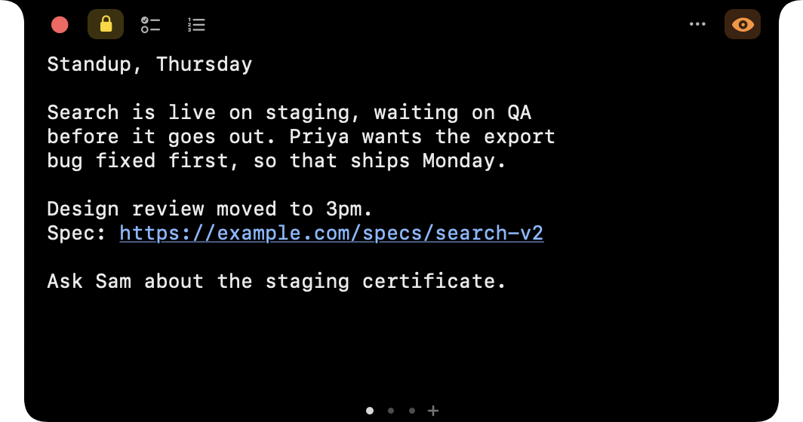
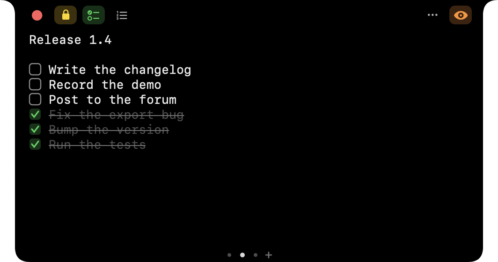
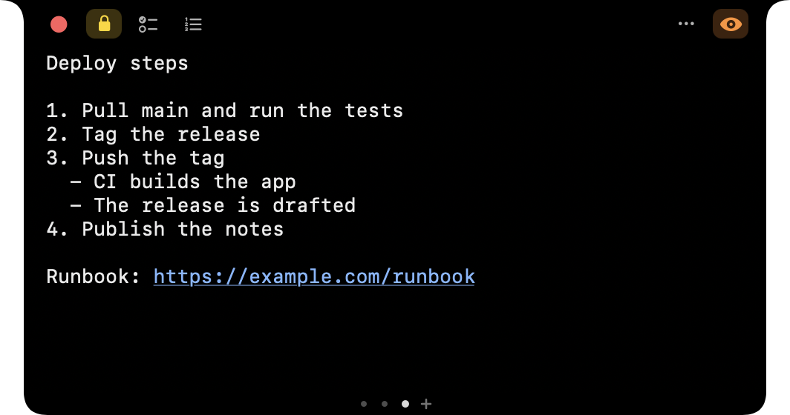
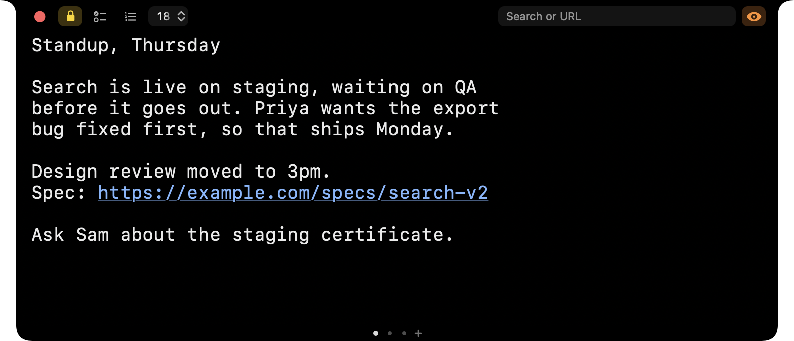
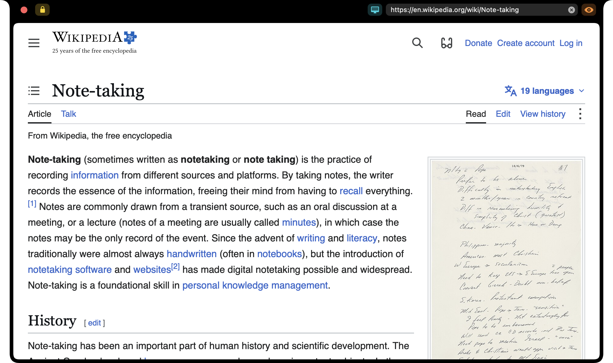
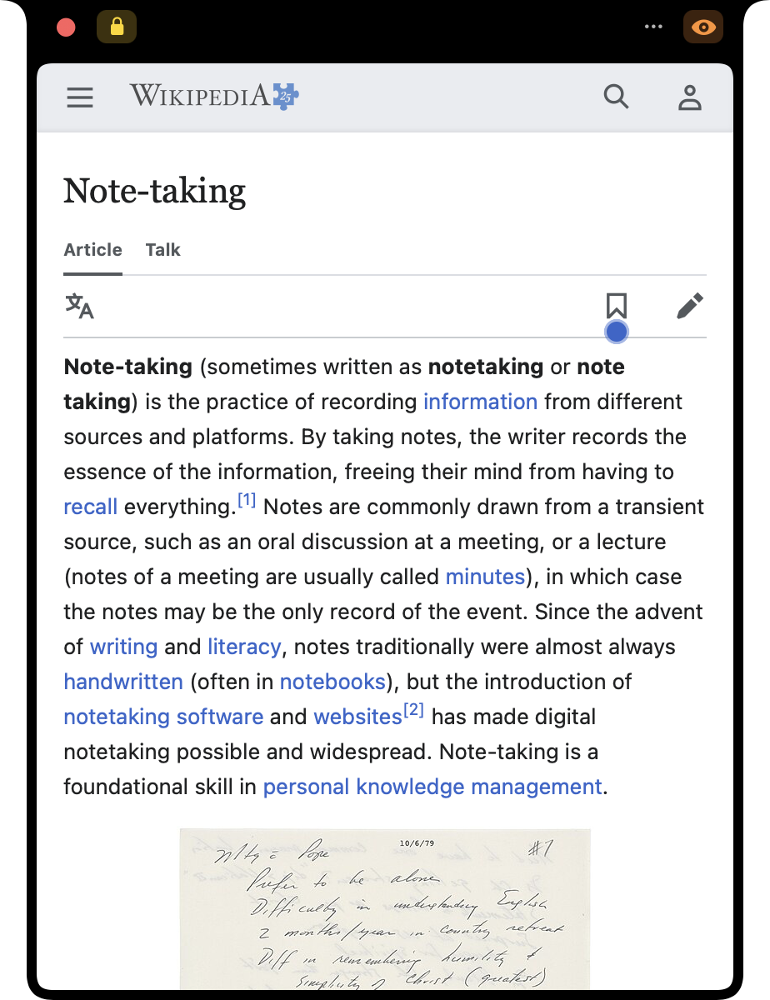
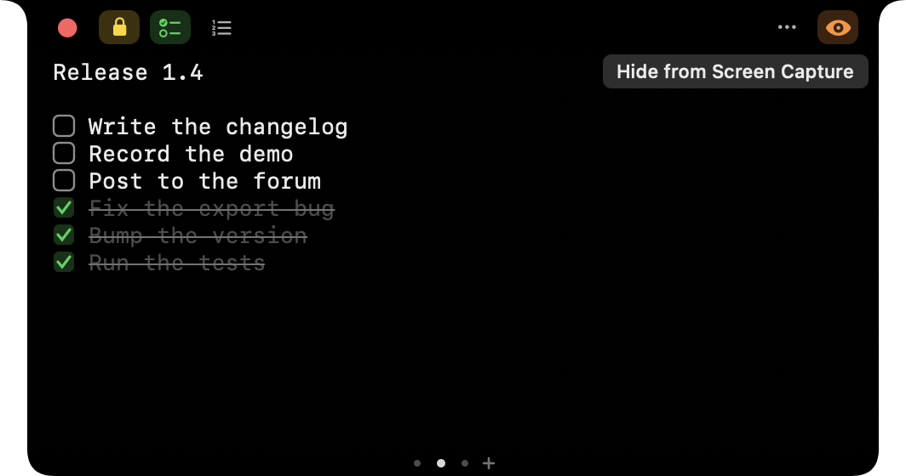
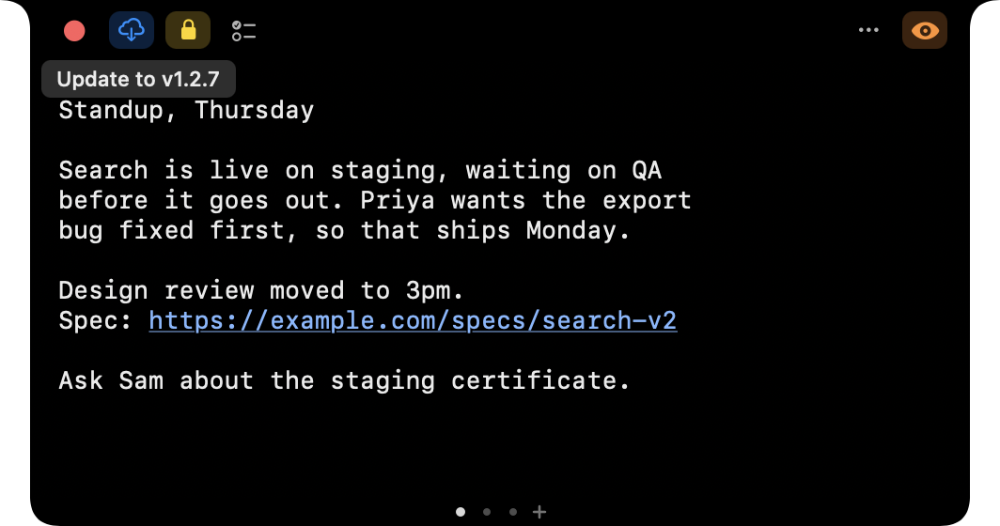

macOS 13 or later · free · open source
A notepad that lives in your MacBook's notch.
Hover over the notch and a panel drops down with your notes, a checklist or any web page. Move away and it disappears. There is no Dock icon, no menu bar icon and no window to manage.
Designed for Macs with a notch. On other Macs the panel sits at the top center of the screen.

Notes, saved as you type
Notes are plain text files, restored the next time the app opens. The dots under the text switch between notes, and + starts a new one.

Checklists
Type - [ ] item or use the checklist button. Click a box to check it. Checked items are struck through and move below the unchecked ones.

Lists and links
Enter continues a numbered or bulleted list and keeps the numbers in order. Tab moves an item in a level. Addresses are underlined, and ⌘-click opens one in the panel.

Any size you like
Drag either bottom corner to resize the panel, and set the editor font from 10 to 24 pt. Both are remembered.

Any web page
Type an address in the URL field and press Return. Text that isn't an address runs a web search. The page is remembered across launches.

Mobile or desktop site
One button switches between the two, so a page fits a narrow panel as well as a wide one.

Hidden from screen sharing
By default the panel is left out of screen recordings and screen shares. The eye button shows it, and hides it again.

Updates itself
When a newer version is available, a cloud button appears. Click it and the app downloads the release, replaces itself and relaunches.
Also in the panel
Opens on hover or by hotkey
Rest the mouse on the notch, or press ⌃⌥N from any app.
Lock open
The lock button keeps the panel open when the mouse leaves, and stays set across launches.
Audio indicator
A page keeps playing after the panel closes, and a thin line pulses around the notch while it does.
Fits any width
Toolbar buttons that don't fit move into a … tray.
Follows your displays
The panel moves with the notch when displays are added, removed or rearranged.
Stays in front
The panel returns to the front when another app's overlay, such as a screen-share border, covers it.
Local addresses
localhost, .local and bare IP addresses load over http.
Downloads
Files are saved to your Downloads folder.
Light and dark
Pages follow the system appearance. The panel itself is always dark.
Your files
Notes live in ~/Library/Application Support/NotchNotes, or in a folder you choose.
Accessible
Toolbar buttons and fields are labelled for VoiceOver.
Keyboard shortcuts
⌘N new note, ⌘L URL field, ⌘R reload. The README lists them all.
Install
Later versions arrive through the update button, so these steps are not repeated.
- Download
NotchNotes-vX.Y.Z.zipfrom the latest release. - Unzip it and move
NotchNotes.appto/Applications. - Clear the macOS quarantine flag. This is needed once, because the app is ad-hoc signed rather than notarized.
xattr -cr /Applications/NotchNotes.app - Open the app and hover over the notch.
To start it at login: System Settings → General → Login Items → + → select
NotchNotes.app.